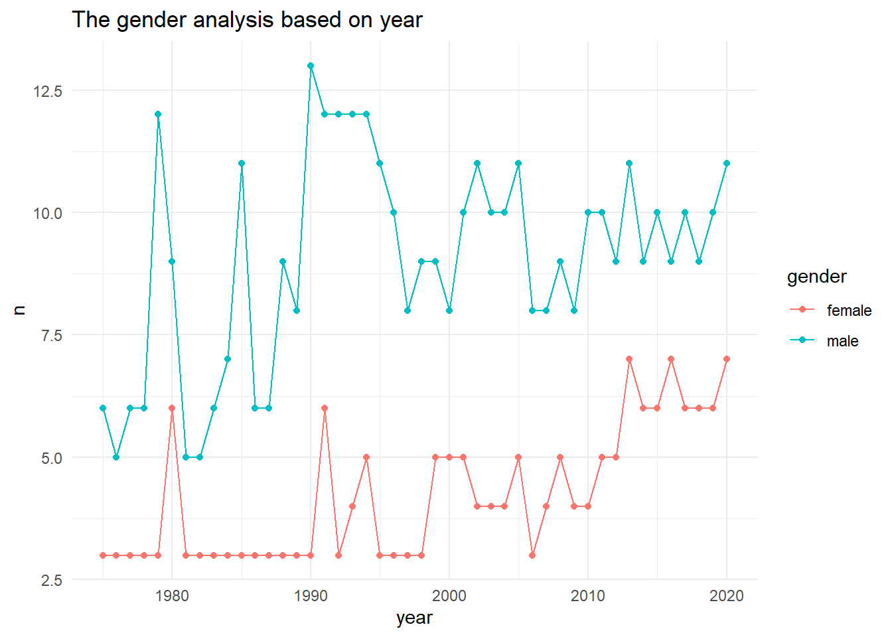

I have chosen SNL data sets. There are a total of 3 data sets in SNL, but they are similar as they are taken from same resource. First I would read the data sets and check them and determine the rows we can use to combine the data sets.
Generated by summarytools 1.0.1 (R version 4.2.1) 2022-08-28
Briefly describe the data
The data sets are read and before combining the data sets we need to tidy the data as needed so it makes it simple to join data and remove the unwanted and empty observations. So we tidy them separately and then join them.
The data sets are now tidy and I have observed that we have common variables between the data sets, First between actors and casts we can join using aid(actor id) variable and then join with seasons using Sid(season id) variable.
Join Data
inner join function
The inner join function is used to join data sets, where the resulting data set contains the intersection f both data sets.
Code
joined_actors_casts <- actors %>%inner_join(casts, by ="aid")all_joined <- joined_actors_casts %>%inner_join(seasons, by ="sid")all_joined
Generated by summarytools 1.0.1 (R version 4.2.1) 2022-08-28
Now the data sets are joined into a complete data set, but we have to remove some values to make it tidy and it is the best we can do to describe and plot the graphs.
Code
yg <- all_joined %>%filter(!gender =="unknown") %>%group_by(year) %>%count(gender)yg %>%ggplot(aes(year, n, color = gender)) +geom_point() +geom_line() +theme_minimal() +labs(title ="The gender analysis based on year")

As per the graph, the male are more then female as casts in different seasons as the year passes on.
Source Code
---title: "Challenge 8"author: "Mani Shanker Kamarapu"description: "Joining Data"date: "08/25/2022"format: html: df-print: paged css: styles.css toc: true code-fold: true code-copy: true code-tools: truecategories: - challenge_8 - snl---```{r}#| label: setup#| warning: false#| message: falselibrary(tidyverse)library(ggplot2)library(scales)knitr::opts_chunk$set(echo =TRUE, warning=FALSE, message=FALSE)```## Read in dataI have chosen SNL data sets. There are a total of 3 data sets in SNL, but they are similar as they are taken from same resource. First I would read the data sets and check them and determine the rows we can use to combine the data sets.```{r}actors <-read_csv("_data/snl_actors.csv")casts <-read_csv("_data/snl_casts.csv")seasons <-read_csv("_data/snl_seasons.csv")print(summarytools::dfSummary(actors, varnumbers =FALSE, plain.ascii =FALSE, style ="grid", graph.magnif =0.70, valid.col =FALSE), method ='render', table.classes ='table-condensed')print(summarytools::dfSummary(casts, varnumbers =FALSE, plain.ascii =FALSE, style ="grid", graph.magnif =0.70, valid.col =FALSE), method ='render', table.classes ='table-condensed')print(summarytools::dfSummary(seasons, varnumbers =FALSE, plain.ascii =FALSE, style ="grid", graph.magnif =0.70, valid.col =FALSE), method ='render', table.classes ='table-condensed')```### Briefly describe the dataThe data sets are read and before combining the data sets we need to tidy the data as needed so it makes it simple to join data and remove the unwanted and empty observations. So we tidy them separately and then join them. ## Tidy Data (as needed)```{r}actors <- actors %>%select(!url)``````{r}casts <- casts %>%select(aid, sid, season_fraction)```The data sets are now tidy and I have observed that we have common variables between the data sets, First between actors and casts we can join using aid(actor id) variable and then join with seasons using Sid(season id) variable.## Join Data:::callout-tip# inner join functionThe inner join function is used to join data sets, where the resulting data set contains the intersection f both data sets.:::```{r}joined_actors_casts <- actors %>%inner_join(casts, by ="aid")all_joined <- joined_actors_casts %>%inner_join(seasons, by ="sid")all_joined``````{r}print(summarytools::dfSummary(all_joined, varnumbers =FALSE, plain.ascii =FALSE, style ="grid", graph.magnif =0.70, valid.col =FALSE), method ='render', table.classes ='table-condensed')```Now the data sets are joined into a complete data set, but we have to remove some values to make it tidy and it is the best we can do to describe and plot the graphs. ```{r}yg <- all_joined %>%filter(!gender =="unknown") %>%group_by(year) %>%count(gender)yg %>%ggplot(aes(year, n, color = gender)) +geom_point() +geom_line() +theme_minimal() +labs(title ="The gender analysis based on year")```As per the graph, the male are more then female as casts in different seasons as the year passes on.